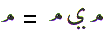
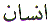
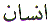

The Arabic letter
Noon  is equivalent to the letter ‘N'
in the English alphabet. It is the twenty-fifth letter in the
Arabic character set. Noon in Arabic numerology which is known
as Abjad, has the value of 50. This article is about the spiritual
meaning of the letter Noon.
is equivalent to the letter ‘N'
in the English alphabet. It is the twenty-fifth letter in the
Arabic character set. Noon in Arabic numerology which is known
as Abjad, has the value of 50. This article is about the spiritual
meaning of the letter Noon.
The letter Noon is used as the opening letter of Chapter 68 in
the Quran. It is also the 13th letter in the verse Bismillah (shown
at the top of page 1 of this book). Al Qalam, Chapter 68 verses
1 to 4 were the second Revelation to Muhammad from Allah through Jibraeel (
from Allah through Jibraeel ( ).
).
In the first Revelation, Al Alaq chapter 96, the first occurrence of the letter Noon was placed in the 25th position. Although, in the second Revelation the letter Noon is placed as the first Arabic character. There are four further interesting points to note about this second Revelation.
The first Revelation, Chapter 96 Al Alaq verses 1 to 4, started with the letter Alif and stopped at the letter Meem . Now, in the second Revelation, the Message starts with the letter Noon and stops at the letter Meem. It is also important to note that out of the 52 verses in chapter 68, 10 verses end in Meem and the rest of the verses (42) end in Noon. Why has the 25th position of the letter Noon in the first Revelation been transposed to arrive at 52 verses for chapter 68?
The letter Noon when written as pronounced is as follows: (Noon = Noon Waw Noon). It appears as the letter Noon whether we see it from right to left, or from left to right. There are only two other Arabic letters which display this quality. They are Meem  (Meem = Meem Ya Meem) and Waw (Waw = Waw Alif Waw).
In the first verse of
chapter 68, if we count the number of letters in that verse we
have 16 letters. Now if we subtract the 3 letters of Noon (Noon Waw Noon) from the above verse we are left
with 13 letters. That matches exactly with the position of the
letter Noon in the verse Bismillah. Since Hidden
(Batin) is the opposite of the Visible (Zahir), we had to hide
the visible Noon from the above verse to arrive
at the visible Noon in the verse Bismillah. What does
the letter Noon represent?
The two Noons in the above verse represent the two worlds. The
way this has been arrived at, is from the word Na_alaik for shoes, which Musa ( )
was told to remove in the Holy Valley of Tuwa.
)
was told to remove in the Holy Valley of Tuwa.
There are two shoes one
for each foot. There are two worlds, this world and the next world.
The spiritual meaning is: Remove your desires for both this world
and the next world. Whereas Muhammad  on the Night of Ascension remembered this verse and decided to
remove his shoes. Not because he did not understand the spiritual
meaning. But, as a form of respect, he performed the outward action
with the inner meaning. He was told to proceed with his shoes.
Which meant, whatever you desire, it is yours, in this world and
the next. Muhammad
on the Night of Ascension remembered this verse and decided to
remove his shoes. Not because he did not understand the spiritual
meaning. But, as a form of respect, he performed the outward action
with the inner meaning. He was told to proceed with his shoes.
Which meant, whatever you desire, it is yours, in this world and
the next. Muhammad  did not ask for
anything for himself. He asked Allah that his followers be forgiven
on the Day of Judgement.
did not ask for
anything for himself. He asked Allah that his followers be forgiven
on the Day of Judgement.
Therefore in Chapter
68 Verse 1, the first Noon is the present world. This is the
visible world. The second Noon is the next world. The next world
is invisible to us while we are present in this world. This world
and the next world are created because it has already been inscribed
on the Lawh (Tablet) by the Qalam (Pen). To arrive into this world our name must
have been inscribed on the Lawh (Tablet) by the Qalam (Pen). Allah knew about us, in His Knowledge, before
we were even born. We existed in Allah's Knowledge in the invisible
world before coming into the present world. Allah, having created
the Light of Muhammad  , created the Lawh and the Qalam. Everything that has existed, or
is in existence, or will come into existence has already been
inscribed on the Lawh by the Qalam.
If ‘something' is not already inscribed on the Lawh, then it will never come into existence. It cannot
come into existence. Therefore Allah commanded the Pen to write.
The Pen wrote. The Pen only wrote what Allah willed, no more and
no less.
, created the Lawh and the Qalam. Everything that has existed, or
is in existence, or will come into existence has already been
inscribed on the Lawh by the Qalam.
If ‘something' is not already inscribed on the Lawh, then it will never come into existence. It cannot
come into existence. Therefore Allah commanded the Pen to write.
The Pen wrote. The Pen only wrote what Allah willed, no more and
no less.
We arrive in this (Noon) world as and when our name or number is called. Having arrived in the present world, we have to cross 14 stages, represented by the first letter Waw to the last Waw. The first stage is (Waw) love and kindness we get from our parents and / or our guardians. As we grow up we are taught about Allah (Alif). We can analyse the rest of the letters of the verse, stage by stage according to our capacities. The final stage we must aim for is to be loved by Allah, Our Rabb, before we proceed to the next world (Noon) when our name is called for the second time. The lesson to be learnt is love (Wadood) and kindness towards all creation. In that state we can concentrate better. The achievement of the goal becomes easier. On the other hand, in a state of hatred and jealousy we dissipate our energy and concentration, which drives us further and further from our goal. The goal being nearness to Allah.
Both, this world and
the next world can be Noor  or
Light or they can be Naar or
fire. We are reminded time after time in the Quran, to keep away
from things and actions which are harmful. We must try and follow
the light and leave alone the things which attract towards the
fire. Even in man or INSAN

Allah has placed these two Noons. The Noon of
this world is the body (or Nafs) which is attached to desire.
This is the fire. The Noon of the next world is the soul (or
Ruh) which commands the body. If the soul is purified, it becomes
Noor. If the soul is corrupted, it becomes Naar. Insan, or man holds the secrets of both
worlds. Hence the two Noons in the word Insan.
To understand the next world, we have to understand Islam both
from the outer performance of rituals and duties plus the inner
spiritual meaning of those rituals. Without the spiritual understanding
of the outer rituals and obligations, the outward performance
of these rituals, do not carry much weight. This world is the
school of learning for the proper conduct in the next world. This
world is the school of learning for our existence in the next
world. This world is the school of learning for knowing our way
in the next world.
or
Light or they can be Naar or
fire. We are reminded time after time in the Quran, to keep away
from things and actions which are harmful. We must try and follow
the light and leave alone the things which attract towards the
fire. Even in man or INSAN

Allah has placed these two Noons. The Noon of
this world is the body (or Nafs) which is attached to desire.
This is the fire. The Noon of the next world is the soul (or
Ruh) which commands the body. If the soul is purified, it becomes
Noor. If the soul is corrupted, it becomes Naar. Insan, or man holds the secrets of both
worlds. Hence the two Noons in the word Insan.
To understand the next world, we have to understand Islam both
from the outer performance of rituals and duties plus the inner
spiritual meaning of those rituals. Without the spiritual understanding
of the outer rituals and obligations, the outward performance
of these rituals, do not carry much weight. This world is the
school of learning for the proper conduct in the next world. This
world is the school of learning for our existence in the next
world. This world is the school of learning for knowing our way
in the next world.
The letter Noon in the verse Bismillah represents Allah is the
Light of Heavens and Earth. We have already established that chapter
Al Qalam has 52 verses with 42 of these verses ending in Noon. Since Noon can be read left to right or right
to left, if we transpose the ‘total number' of the verses
of Al Qalam we arrive at 25 from 52. Chapter 25 is Al Furqan -
The Criterion. The name of the chapter starts with the Arabic
letter Fa ( ). The criterion for the purposes
of the present article is Noon and not Fa. On the other hand,
if we take the ‘number' of verses ending in Noon (42) and
transpose the number 42 we arrive at 24. Chapter 24 is An Noor - The Light. The name of the chapter starts
with the letter Noon. The verse that is the heart of
this chapter is:
). The criterion for the purposes
of the present article is Noon and not Fa. On the other hand,
if we take the ‘number' of verses ending in Noon (42) and
transpose the number 42 we arrive at 24. Chapter 24 is An Noor - The Light. The name of the chapter starts
with the letter Noon. The verse that is the heart of
this chapter is:

For a full explanation of the Verse of Light see Imam Ghazzali's Mishkat Al Anwar.
The important point to
notice here is that the above Verse of Light starts with Alif ( ) and ends with
Meem (
) and ends with
Meem ( ) which we have
come across before in Ayat
ul Kursi, the essence
of the Quran (Al Baqara Chapter 2 verse 255). [See the Book on
Meem about Starting with Alif and ending with Meem for
a fuller explanation].
) which we have
come across before in Ayat
ul Kursi, the essence
of the Quran (Al Baqara Chapter 2 verse 255). [See the Book on
Meem about Starting with Alif and ending with Meem for
a fuller explanation].
Now the verse of Light
is numbered 35. We can either transpose the ‘total number'
of verses for chapter 68 Al Qalam (52) and arrive at 25. Then
we need to add 10 for the verses that end in Meem 25
+ 10 to arrive at 35. Here Meem is the guiding factor. In other
words, we have to rely on the Guidance left by Muhammad  for his followers to seek Allah. Alternatively
we can seek Allah directly by adding 1 for Alif to
the total number of verses of Al Qalam (52) and arrive at 53.
Then we can transpose that number and arrive at 35.
for his followers to seek Allah. Alternatively
we can seek Allah directly by adding 1 for Alif to
the total number of verses of Al Qalam (52) and arrive at 53.
Then we can transpose that number and arrive at 35.
For Muslims, it is imperative
that we follow the Sunnah (Example) of Muhammad  when seeking Allah. Then there is no question of failing. All
the Messengers from Adam (
when seeking Allah. Then there is no question of failing. All
the Messengers from Adam ( ) to
Isa (
) to
Isa ( ) and all the saints had to understand
the Spirituality of Muhammad
) and all the saints had to understand
the Spirituality of Muhammad  to
attain nearness to Allah. Muhammad
to
attain nearness to Allah. Muhammad  is the only one who reached Allah directly because he understood
himself, or to say it another way, he understood his position
in Allah's plan, or to say it yet another way Muhammad
is the only one who reached Allah directly because he understood
himself, or to say it another way, he understood his position
in Allah's plan, or to say it yet another way Muhammad  understood Allah like no other person before him or after him.
Hence:
understood Allah like no other person before him or after him.
Hence:
This verse in Arabic starts with the letters Alif Noon Alif.
As for the non-Muslims
who follow the path of mysticism, they arrive at some degree of
Truth. But because of their denial of the role of Muhammad  and the Quran in this path, the Truth that
they arrive at, is unclear.
and the Quran in this path, the Truth that
they arrive at, is unclear.
Allah has placed the Light (Noor) in all the human beings. It is this Noor that separates mankind from animals. Allah guides to His Noor (Light) whom He will.
The verse numbers of Al Qalam (42 verses ending in Noon and 52 verses in total) can be applied to the Quran and we arrive at: (verse is 51 is included for continuity in verse 52)
The above verse confirms
what has been stated earlier that Allah only guides those people
who follow the light of the Quran and the guidance of Muhammad
 . Otherwise the Truth becomes hazy
for those without a spiritual guide, and all spiritual guides
lead to Muhammad
. Otherwise the Truth becomes hazy
for those without a spiritual guide, and all spiritual guides
lead to Muhammad  - Hadee - who is
The Spiritual Guide.
This is confirmed by Allah in the Quran:
- Hadee - who is
The Spiritual Guide.
This is confirmed by Allah in the Quran:
The above verse shows
us that Muhammad  is the Guide for
all mankind. Because Allah's Noor or Light or guidance is placed
in all mankind. Muhammad
is the Guide for
all mankind. Because Allah's Noor or Light or guidance is placed
in all mankind. Muhammad  the
first Light or Noor created by Allah, is the guide for all mankind
from Adam (
the
first Light or Noor created by Allah, is the guide for all mankind
from Adam ( ) to the last human
being that will be born, he is the guide that leads others to
Allah. Since the First creation by Allah was the Noor of Muhammad
) to the last human
being that will be born, he is the guide that leads others to
Allah. Since the First creation by Allah was the Noor of Muhammad
 , and everything else was created
from that Light. What ever the Qalam (Pen) wrote came into existence,
or will come into existence.
, and everything else was created
from that Light. What ever the Qalam (Pen) wrote came into existence,
or will come into existence.
What is meant by Guidance?
Guidance is something that cannot be seen by the eye. In other
words, Guidance is Light which cannot be seen by the eye. The
Guidance is Light. "Allah speaks to mankind in allegories".
Allegories meaning analogy or comparison. The Light spoken of
in chapter 24 verse 35 means Guidance. The Guidance or Light is
logic. The Guidance or Light is reason. The Guidance or Light
is knowledge. The Guidance or Light is awakening or inspiration
if Allah Wills. It is what leads man to Allah. The following is
an example of the Guidance or Light:
Let us apply the guidance
to the above verse and see if we can increase our knowledge if
Allah Wills. First of all, just looking at the verse, the first
person that Allah mentions is Nuh ( ) whose
name has three letters Noon Waw Ha
and the name starts with the letter Noon.
The first two letters are the same as Noon which also has three letters.
Not to mention the word Noor
) whose
name has three letters Noon Waw Ha
and the name starts with the letter Noon.
The first two letters are the same as Noon which also has three letters.
Not to mention the word Noor  which
also has three letters. There are 13 people or groups mentioned
in this verse, namely:
which
also has three letters. There are 13 people or groups mentioned
in this verse, namely:
(1) Nuh, (2) the Messengers after him, (3) Ibraheem, (4) Ismaeel, (5) Iss_haaq, (6) Yaqub, (7) the Tribes, (8) Isa, (9) Ayub, (10) Yunus, (11) Haroon, (12) Sulaiman and (13) Dawood.
Subtract the three letters of Noon (Noon Waw Noon) from chapter 68 verse 1 and we are left with 13 letters. The position of the letter Noon is 13 in the verse Bismillah.
All right, let us try
and see if the above was merely a coincidence. Let us start again
and see if we can connect the letter Noon with
the above verse. Although there are certain chapters named after
the Messengers of Allah, Yunus ( ) is
the one who is mentioned in the tenth position in Chapter 4 Verse
163 above. Chapter 10 in the Quran is also called Yunus. His name is deliberately placed tenth in the above
verse. And Yunus (
) is
the one who is mentioned in the tenth position in Chapter 4 Verse
163 above. Chapter 10 in the Quran is also called Yunus. His name is deliberately placed tenth in the above
verse. And Yunus ( ) is
also referred to as Zaan
Noon in the Quran. Where
as Nuh is chapter 71 and Ibraheem is chapter 14.
) is
also referred to as Zaan
Noon in the Quran. Where
as Nuh is chapter 71 and Ibraheem is chapter 14.
To emphasise the connection
with the letter Noon, Yunus ( )
is mentioned in the chapter Qalam in verse 48. Although in this
instance Yunus (
)
is mentioned in the chapter Qalam in verse 48. Although in this
instance Yunus ( ) is
mentioned as Sahibil
Hoot (Companion of the
fish) so as not to make the Noon connection too obvious. But if
we look at what we are told in the Quran, the connection is Noon and Noor and Light.
) is
mentioned as Sahibil
Hoot (Companion of the
fish) so as not to make the Noon connection too obvious. But if
we look at what we are told in the Quran, the connection is Noon and Noor and Light.

We have to look at verse
49 where the words Naymatum
Min Rabbih is used
instead of Fadhl, or Rahmat
or other words related with grace, mercy, compassion, forgiveness
etc. Allah also chose the verse numbers deliberately to hint at
the letter Noon and Guidance. Allah mentions Yunus ( ) in verse 48 and
Allah mentions His
Naymat - with a Noon -
(Grace or Guidance) in verse 49 (4+9 = 13). Which again equates
to the position of Noon in the verse Bismillah. And in
verse 50 (Numerical value of Noon) we are told Allah chose him and
placed him among the righteous. The entire mention of Yunus (
) in verse 48 and
Allah mentions His
Naymat - with a Noon -
(Grace or Guidance) in verse 49 (4+9 = 13). Which again equates
to the position of Noon in the verse Bismillah. And in
verse 50 (Numerical value of Noon) we are told Allah chose him and
placed him among the righteous. The entire mention of Yunus ( ) in this chapter,
takes no more than three verses. Noon (Noon Waw Noon) also has three letters. In other words, he became
enlightened. And we must all remember the following concerning
Yunus (
) in this chapter,
takes no more than three verses. Noon (Noon Waw Noon) also has three letters. In other words, he became
enlightened. And we must all remember the following concerning
Yunus ( ):
):
Because Yunus ( ) ran away from his mission to
guide his community, Allah first plunged him in darkness in the
belly of the fish. This was not just the worldly darkness but
also the spiritual ‘darkness'. Then he started repenting
and the inner light was bestowed on him. Followed by outer light,
whereby he was taken out of the belly of the fish. Hence the mention
in this chapter about Yunus (
) ran away from his mission to
guide his community, Allah first plunged him in darkness in the
belly of the fish. This was not just the worldly darkness but
also the spiritual ‘darkness'. Then he started repenting
and the inner light was bestowed on him. Followed by outer light,
whereby he was taken out of the belly of the fish. Hence the mention
in this chapter about Yunus ( ). Let
us look at the verse which includes the Zikr of Yunus (
). Let
us look at the verse which includes the Zikr of Yunus ( )
and then try to see the connection between guidance and light
and the chapter Al Qalam.
)
and then try to see the connection between guidance and light
and the chapter Al Qalam.
In the above verse,
which is also known as Ayat Kareem, there are exactly 14 Noons. In Chapter 68 verse 1 we have 14 letters between
the first and the last Noon.
The guidance is in the letters of the verses. There are 14 letters between the two Noons in chapter 68 verse 1. The two Noons are acting like light beacons. The connection is that there are 14 letters which are used in certain chapters of the Quran as the opening verses. There are 14 combinations of these letters. These 14 letters are called The Muqattaat or the Abbreviated Letters. The Muqattaat letters are:

The number of chapters which have these 14 letters in different combinations as their opening verses is 29.
Subtract the 16 letters of Chapter 68 verse 1 from the total number of chapters with Muqattaat we get 29 - 16 = 13 the position of the letter Noon in the verse Bismillah.
If we now take away the letters for:
Noon
Meem and
Waw from  verse
1 chapter 68 (16 - 9) we are left with 7 letters which is the
same number as in the title Zaan
Noon
verse
1 chapter 68 (16 - 9) we are left with 7 letters which is the
same number as in the title Zaan
Noon  given
to Yunus (
given
to Yunus ( ) by
Allah in Chapter 21 Verse 87.
) by
Allah in Chapter 21 Verse 87.
If we now discount the repeated letters in verse 1 chapter 68 we are left with 10 letters as shown:
Noon, Waw, Alif, Laam, Qaf, Meem, Ya, Seen, Toin and Ra
Looking at the title
of Yunus ( ) which is Zaan Noon
) which is Zaan Noon  there are two Alifs. These can be interpreted as the number 11 which
is one more than the number in the above letters. This was a shorthand
analysis. Alternatively we can look at it in a long winded way
by the number of times Yunus (
there are two Alifs. These can be interpreted as the number 11 which
is one more than the number in the above letters. This was a shorthand
analysis. Alternatively we can look at it in a long winded way
by the number of times Yunus ( ) is
mentioned in the Quran. Yunus (
) is
mentioned in the Quran. Yunus ( ) is
mentioned in the following places in the Quran:
) is
mentioned in the following places in the Quran:
1 Chapter 4 An Nisaa
verse 163 (Yunus) 1 verse
2 Chapter 6 Al Anaam verse 86 (Yunus) 1 verse
3 Chapter 10 Yunus verse 98 (Yunus) 1 verse
4 Chapter 37 As Saffat verses 139-147 (Yunus) 9 verses
5 Chapter 68 Al Qalam verses 48-50 (Companion of Fish) 3 verses
6 Chapter 21 Al Anbiyaa verses 87-88 (Zaan Noon) 2 verses
Total number of verses
= 17. Again it is one more than the number of letters in Al Qalam
verse 1 which has 16 letters. The two Alifs
can be interpreted as 1+1 = 2. The one with 2 Noons.
Every human being has the two Noons as displayed by the word Insan.
There is something extra that was bestowed on Yunus ( )
by Allah ("None
should say that I am better than Yunus bin Matta." ).
)
by Allah ("None
should say that I am better than Yunus bin Matta." ).
Now lets look at the
title Zaan Noon .
Za (
.
Za ( Numerical
value = 700), Alif (
Numerical
value = 700), Alif ( Numerical
value = 1), Alif (
Numerical
value = 1), Alif ( Numerical
value = 1), Laam (
Numerical
value = 1), Laam ( Numerical
value = 30), Noon (
Numerical
value = 30), Noon ( Numerical
value = 50), Waw (
Numerical
value = 50), Waw ( Numerical
value = 6) and Noon (
Numerical
value = 6) and Noon ( Numerical
value = 50). If we add the numerical values of these letters we
have :
Numerical
value = 50). If we add the numerical values of these letters we
have :
700 + 1 + 1 + 30 + 50 + 6 + 50 = 838.
Notice that the overall sum 838 can be read either way, left to right or right to left just like Noon. Coincidence? The number 838 itself has the digit 3 in the middle as if it stands for the three letters of Noon . Hide the digit '3' and add the two digits which are '8' and '8' we get 16 for the letters in chapter 68 verse 1. Alternatively add all three digits (8+3+8) and we get 19 for the verse Bismillah. And if we now subtract the digit 3 from the two 8's (8 + 8 - 3) we again arrive at 13 the position of the letter Noon in the verse Bismillah. The words "The Verse Bismillah is the Key to Heaven" are heard once again. All this agrees because there is an extra Alif in Zaan Noon. As far as pronunciation is concerned, the extra Alif is not required. This is further proof that the Quran is intact without omissions or additions. After all, Allah has taken the responsibility of guarding the Quran Himself.
It was mentioned earlier in this article that in Al Qalam 10 verses end with the letter Meem, and the rest of the verses all end with the letter Noon. There must be something special about the letter Meem, why else would only two letters be used as the last letter of every verse. All the verses could have ended with the letter Noon. Allah has the Power and Wisdom to do whatever He Wills.
As we have already seen,
there are 10 individual letters in chapter 68 verse 1 (without
repetition). That ties in with the 10 verses ending in Meem. The verses relating to Yunus ( ),
48, 49 and 50, two of these verses end in Meem.
If we count the number of Meems in these three verses there are
9 Meems. With the number 9 in mind, we
find in verse 1 there are 9 letters from the Muqattaat. The letter
Waw (
),
48, 49 and 50, two of these verses end in Meem.
If we count the number of Meems in these three verses there are
9 Meems. With the number 9 in mind, we
find in verse 1 there are 9 letters from the Muqattaat. The letter
Waw ( ) is the odd one
out. Waw has been deliberately chosen because
it is the most frequently occurring character (3 times). This
is a guidance to keep away from the Naar and stay towards Noor
) is the odd one
out. Waw has been deliberately chosen because
it is the most frequently occurring character (3 times). This
is a guidance to keep away from the Naar and stay towards Noor  . Since we are on the subject of 9 letters
of Muqattaat, the verse Bismillah also has 9 letters of Muqattaat
(not counting repeated letters). There the letter Ba
(
. Since we are on the subject of 9 letters
of Muqattaat, the verse Bismillah also has 9 letters of Muqattaat
(not counting repeated letters). There the letter Ba
( ) is the odd one out. Which shows
that the guidance is for the one created from the Creator and
there is no number higher than 9. Or looking at in another way
2 odd letters (Ba in Bismillah and Waw in
Chapter 68 Verse 1) and both verses contain 9 letters of Muqattaat.
29 chapters start with these Muqattaat. Is there a connection?
The title Zaan Noon, do the two Alifs
mean 1+1 = 2, or 1 and 1 = 11? 2+9 also = 11, or does it = 2?
Is there a connection? The connection is for the created to turn
in repentance towards the Creator. He will forgive our faults
and elevate us by showering His Mercy on us. If He forgives us,
we will meet Him 1 to 1.
) is the odd one out. Which shows
that the guidance is for the one created from the Creator and
there is no number higher than 9. Or looking at in another way
2 odd letters (Ba in Bismillah and Waw in
Chapter 68 Verse 1) and both verses contain 9 letters of Muqattaat.
29 chapters start with these Muqattaat. Is there a connection?
The title Zaan Noon, do the two Alifs
mean 1+1 = 2, or 1 and 1 = 11? 2+9 also = 11, or does it = 2?
Is there a connection? The connection is for the created to turn
in repentance towards the Creator. He will forgive our faults
and elevate us by showering His Mercy on us. If He forgives us,
we will meet Him 1 to 1.
There are 14 letters
of Muqattaat. 14(total) - 9(visible) = 5 missing letters of Muqattaat
from chapter 68 verse 1. The word Noor is
mentioned five times in the Verse of Light (it cannot be a coincidence).
The five missing letters of Muqattaat are Kaaf ( Numerical Value = 20), Ha (
Numerical Value = 20), Ha ( as in HU) (
as in HU) ( Numerical
Value = 5), Ayn (
Numerical
Value = 5), Ayn ( Numerical
Value = 70), Saad (
Numerical
Value = 70), Saad ( Numerical
Value = 90) and Ha (
Numerical
Value = 90) and Ha ( as in
Haqq) (
as in
Haqq) ( Numerical Value = 8). Add the numerical
value of the missing five letters and we have:
Numerical Value = 8). Add the numerical
value of the missing five letters and we have:
20 + 5 + 70 + 90 + 8 = 193 = 1 + 9 + 3 = 13
which starts pointing to the letter Noon in the verse Bismillah.
If we now look at the
9 Muqattaat letters in Chapter 68 verse 1, they are Noon ( = 50), Alif (
= 50), Alif ( = 1), Laam (
= 1), Laam ( = 30), Qaf (
= 30), Qaf ( = 100), Meem (
= 100), Meem ( = 40), Ya
(
= 40), Ya
( = 10), Seen (
= 10), Seen ( = 60), Toin (
= 60), Toin ( = 9)
and Ra (
= 9)
and Ra ( = 200). Adding
the numerical values of these letters we have:
= 200). Adding
the numerical values of these letters we have:
50 + 1 + 30 + 100 + 40 + 10 + 60 + 9 + 200 = 500.
Remove one zero from 500 we are left with 50 (Numerical Value of letter Noon). Connecting these 9 letters with light or guidance. Remove the second zero and we are left with 5 for the missing letters of Muqattaat. If we think about it, if the opening letters of the 29 chapters did not have special meanings, then there was no reason for including them in verses. Having found the missing 5 letters we have come back full circle to 14 letters between the two Noons where this article started.
Finally to sum up, Noon is the light and guidance that comes from Allah,
through Muhammad  . Mankind! I (Muhammad) am the messenger of
Allah to you all (7:158). Talking about Light and Guidance look at the underlined
words above. If Adam (
. Mankind! I (Muhammad) am the messenger of
Allah to you all (7:158). Talking about Light and Guidance look at the underlined
words above. If Adam ( ) read
them in his time the words would apply to him. If the Companions
(ra) of the Messenger of Allah read them during the lifetime of
Muhammad
) read
them in his time the words would apply to him. If the Companions
(ra) of the Messenger of Allah read them during the lifetime of
Muhammad  , the words would apply to them.
When we read these words, they apply to us. It is in the present
tense. The common factor or link or light between Allah and mankind
is Muhammad
, the words would apply to them.
When we read these words, they apply to us. It is in the present
tense. The common factor or link or light between Allah and mankind
is Muhammad  and the Quran.
In which there is no doubt. It does not matter which part of the
Quran we recite, Allah Knows. But always remember to send Blessings
on Muhammad
and the Quran.
In which there is no doubt. It does not matter which part of the
Quran we recite, Allah Knows. But always remember to send Blessings
on Muhammad , before and after
recitation or Zikr. There is no question of failing to receive
the Light.
, before and after
recitation or Zikr. There is no question of failing to receive
the Light.
| BACK |